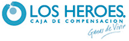
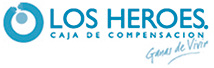

-

Diversidad
Utilización de diversas herramientas y entornos tecnológicos
-

Versatilidad
Desarrollos web, Proyectos y consultorias en áeas financieras en la industria y en el comercio
-

Capacidad de Realización
Gerenciamiento de Proyectos de mediano y gran porte
-

Cumplimiento
de objetivos dentro de los plazos definios, utilización de mejores prácticas, técnicas de negociación, otros
-

World Class
Implementación de aplicaciones de reconocidos resultados a nivel mundial (SAP, Bantotal, FISA)
-

Conocimiento
Reglas del negocio financiero, normativa superintendencias, normas reguladoras (Basilea)
-

Integradores de sistemas
Estamos especializados en la integración de sistemas y aplicaciones


Productos
- TUFACTURACIÓN.CL: Gestión de la generación de Facturas Electrónicas, con las siguientes ventajas:
Ahorro de Papel y timbres
• Facturación masiva para tus proveedores
• Libro de compra y venta automáticos
• Recepción de facturas
• Administración de sucursales
• Emisión de Factura electrónica afecta y exenta de IVA
• Puede ocuparse desde cualquier computador vía WEB
• Guía de despacho
• Nota de crédito
Más información en www.tufacturacion.cl
- Gestión de Requerimientos e Incidencias:
Es una herramienta que permite realizar la gestión completa para el tratamiento de Incidencias durante el ciclo de vida de una aplicación ó como herramienta fundamental para la interacción de las áreas de Desarrollo, QA y Producción para su administración (utilizada por el Call Center y por la Mesa de Gestión de Incidencias). Los errores ó mejoras que demanda la administración (usuarios), son ingresadas inherentes al ciclo de vida de las aplicacioens) de una aplicación
- Workflow-NXT
Es un motor genérico de actividades que permite definir Flujos y Tareas, para determinados Roles-Usuarios, con el fin de ordenar las demandas, dirigirlas a quien corresponda, dejándolas en su Bandeja de Entrada y enviando avisos a través de diversos medios: mails, msg, otros. Permite adjuntar documentos de distinto tipo, definir fechas de compromisos, y en general, agendar y supervisar la marcha de un proyecto/tarea a través de las distintas áreas de la organización. Uno de sus usos posibles consiste en la Gestión de Comités: fijar reuniones, convocar miembros, adjuntar actas, fijar las tareas, fechas y responsables.
- GAM (Global Access Manager ) para el Control de las Cuentas de Usuario en toda la Insatalación:
Es un producto informático, desarrollado en versiones para múltiples plataformas, que permite gestionar y supervisar, en forma ordenada y segura, la actividad de los Usuarios en los diferentes ambientes y aplicaciones de toda la instalación.
Sus alcances se extienden desde la interacción automatizada con datos mínimos y no sensibles de la nómina (documento identidad, nombre y cargo) que proporciona el Dpto. de RRHH, hasta el monitoreo con extractores especializados de las actividades de las cuentas en las distintas capas de software: Sistema Operativo, Base de Datos, Aplicaciones.
Un sistema de alertas automáticos, extractores , asociadas a un workflow, permite mantener una supervisión continua sobre la actividad de Programadores (propios y externos), Funcionales de IT, Administradores de DB, Usuarios de tareas críticas (por ej. cajeros), y de toda otra persona que interactúa con la plataforma, ya sea a través de aplicaciones cerradas (de pequeño porte ó world class), ó bien de herramientas de “uso libre” y de alta criticidad (comandos de base de datos, por ejemplo).
Una de las características más valiosas del GAM es que brinda la posibilidad de distribuir la responsabilidad, sobre la actividad de los usuarios, en aquellas personas que tienen el conocimiento y la autoridad como para impedir la asignación de atribuciones que representen un riesgo para la instalación. Es decir que, si bien reconoce a un encargado de seguridad, le suministra a éste último, las herramientas para definir niveles y responsables en los distintos ambientes (Desarrollo, QA, Testing, Producción), posibilitando la minimización de un problema grande: lo que normalmente debe resolver una sola persona, se atomiza en tareas diarias de escasa demanda para cada uno de los responsables “locales”, y que además reciben la “ayuda” de un WorkFlow inteligente que solo requerirá su atención para aquellas situaciones definidas como anómalas.
Permite una instalación en forma progresiva, es decir se puede comenzar con extractores simples a nivel de la DB, que solamente brindan información de la conexión de los usuarios (usuario, fecha/hora de acceso) al workflow, permitiendo que éste alerte de aquellas actividades definidas como “no previstas”, dejándola a disposición del responsable designado a través de su bandeja de entrada. Esta primera etapa puede seguir con otros entornos (otros ambientes ó sistema operativo) hasta llegar a la instalación de extractores especializados a nivel de la aplicación. Continuando en ésta línea, se llega a la integración de funciones con mayor automatismo, que, por ejemplo, pueden alertar en forma on-line (a través de mails ó sms) de actividades no usuales a los encargados de la seguridad.
Uno de sus mayores resultados es que toda cuenta termina teniendo su identificación (documento de identidad).
- SW Todo Alojamiento:
Aplicación web para la atención, reserva, control y liquidación final de los servicios prestados a los huéspedes. Con énfasis en la Gestión de Reserva, Gestión de Caja y en especial, con la incorporación de “medios móviles” (smart phone, i-pad, etc.) para consultas, autorizaciones y supervisión por parte del dueño/encargado. Resuelve la facturación, su contabilización y estadísticas de distinto tipo. Puede funcionar desde “la nube” como un Servicio ó bien en forma local.
De nuestra cartera de clientes, mencionamos

 



Empresa
La Organización
Tecnología
Ambientes de Ejecución
Arquitecturas múltiples
Bases de Datos
Multiplicidad de lenguajes
Lenguajes de Programación
GeneXus
Productos
Tufacturación.Cl
Gestión de Requerimientos e Incidencias
Workflow-NXT
GAM
SW Todo Alojamiento
Servicios
Consultoria (PMO)
Mantenimiento Aplicaciones
Mantenimiento de la Instalación
Definición e implementación de Quality
Servidores Web
WebSphere
Apache
MS IIS
Acuerdos/Asociaciones